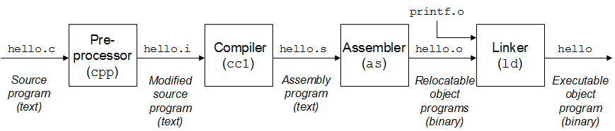
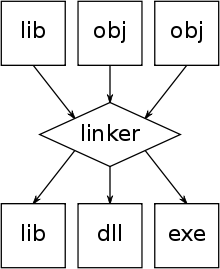
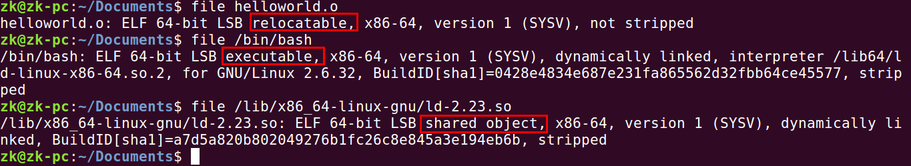
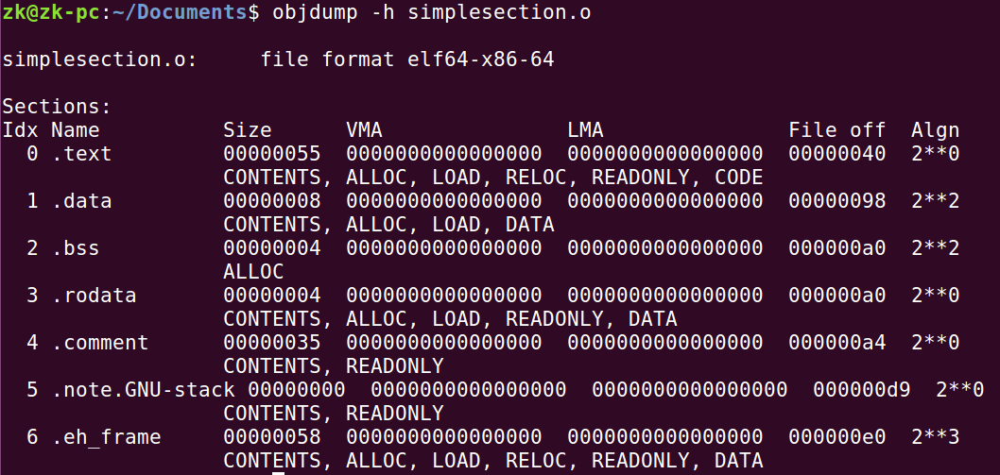
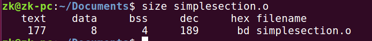

Any problem in computer science can be solved by another layer of indirection.
在早期的计算机中，程序是直接运行在物理内存上的，也就是说，程序在运行期间所访问的地址都是物理地址。当然如果一个计算机同时只运行一个程序，那么只要程序要求的内存空间不要超过物理内存的大小，就不会有问题。但事实上我们为了更有效的利用硬件资源，必须运行多个程序，那么问题来了，如何将计算机上有限的物理内存分配给多个程序使用？ 直接划分物理内存地址会带来问题:
随后，有人提到了分段 (Segmentation) 的方法。它虽然解决了第一和第三个问题，然而还是会存在整个程序被换下的问题，从而严重影响速度。事实上，根据程序的局部性原理，当一个程序在运行时，在某个时间段内，它只是频繁地用到了一小部分数据，也就是说，程序的很多数据其实在一个时间段内都是不会被用到的。人们很自然的想到了更小粒度的内存分割与映射的方法，提高内存的使用率。这种方法就是分页 (Paging)。
那么我们可以把进程的虚拟地址空间按页分割，把常用的数据和代码页装载到内存中，把不常用的代码和数据保存在磁盘里，当需要用到的时候再把它从磁盘里取出来即可。当程序运行期间，如果用到的页还没有加载到内存中的时候，这个时候会产生页错误 (Page Fault)，这个时候，操作系统会负责从磁盘调度缺失的页并装载到内存中。
gcc hello.c 的过程可以分解为 4 个步骤，分别是 Prepressing、Compilation、Assembly 和 Linking。
预编译，处理以 # 开头的预编译指令:
|
|
编译，进行词法分析，产生汇编代码文件:
|
|
汇编，将汇编代码转为机器可以执行的指令:
|
|
链接，拼接各个模块:
|
|
对于 C 语言的代码来说，这个预编译和编译的程序是 cc1，对于 c++ 来说，有对应的程序叫做 cc1plus; Objective-C 是 cc1obj，fortran 是 f771，Java 是 jc1。所以实际上 gcc 这个命令只是这些后台程序的包装，它会根据不同的参数要求去调用预编译编译程序 cc1、汇编器 as、链接器 ld。

程序经过扫描、语法分析、语义分析、源代码优化、代码生成和目标代码优化之后，源代码终于被编译成为了目标代码，但是这个目标代码有一个问题是: index 和 array 的地址还没有确定。目标代码中有变量定义在其他模块，事实上，定义其他模块的全局变量和函数在最终运行时的绝对地址都要在最终链接的时候才能确定。
链接器的主要工作内容包括: 地址和空间分配、符号决议 (Symbol Resolution) 和重定位等。

目标文件本身就是按照可执行文件格式存储的，只是还没有经过链接，可能有些符号或者地址需要被调整。可执行文件格式一般为分 Windows 平台下的 PE (Portable Executable) 和 Linux 平台下的 ELF (Executable Linkable Format)，它们都是 COFF (Common file format) 格式的变种。不管是可执行文件，动态链接库 (Dynamic Linking Library, .dll 文件和 .so 文件) 以及静态链接库 (Static Linking Library) 都是按照这种格式存储的。

总体而言，程序源代码被编译后主要分成两种段: 程序指令和程序数据。代码段属于程序指令，而数据段和 .bss 段 (未初始化的全局变量和局部静态变量) 属于程序数据。
|
|
我们使用 gcc -c simplesection.c 来编译，参数 -c 表示只编译不链接

有一个专门的命令叫做 size，它可以专门用来查看 ELF 文件的各个段的长度:

objdump 的 -s 参数可以将所有段的内容以十六进制打印出来，-d 参数可以将所有包含指令的段反编译:
|
|